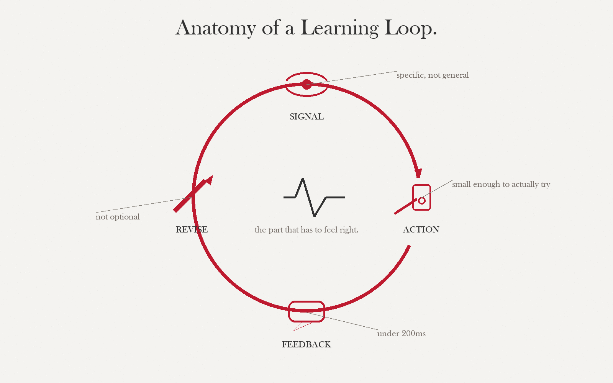

By the end of this session, you can…
- LO 4.1Locate your target difficulty as a zone, not a single point — and describe the adjustment knobs that keep learners inside it.
- LO 4.2Distinguish four kinds of feedback by timing and grain, and choose the right kind for each objective type.
- LO 4.3Design a failure loop that teaches — short, costly-enough, recoverable, and instructive — and say when not to design one.
- LO 4.4Annotate your D2 with the specific challenge/feedback/failure risks per row; identify the highest-risk row first.
Difficulty is a zone, not a point
"Flow" is popular and mostly right but too coarse to design against. Think instead about two ranges inside one envelope: the tolerance band (where most learners can continue without help) and the productive-struggle band (where they stall but can recover within one or two attempts). Your game should spend 70% of time in the first and 25% in the second. The remaining 5% is genuine failure — see §04.

Time pressure
Shorten the clock and every other difficulty goes up with it. Most powerful for retrieval, discrimination, and procedural fluency; dangerous for judgment under uncertainty (it hides reasoning).
Information completeness
Hide features, delay readouts, obscure second-order effects. Most powerful for conceptual reasoning and judgment; can frustrate retrieval/discrimination if overused.
Distractor similarity
Make the wrong options look more like the right one. The fulcrum of discrimination learning. Too subtle and learners guess; too crude and they never have to look at the discriminating feature.
Stake
What the player loses on error. Progress, resources, relationship, identity. Low stake = low engagement and low attention. High stake = avoidance. Calibrate against the learner's risk tolerance.
Every mechanic in your game should have at least one tunable knob that you — or an adaptive system — can turn during play. If you have no knobs, your game teaches one learner and fails the rest.
Four kinds, four purposes
Most educational games default to immediate, verification-grain feedback ("correct!"). That choice is only defensible for retrieval. Every other objective type wants something else.
| Kind | Timing / grain | Best used for | Characteristic mistake |
|---|---|---|---|
| Verification | Immediate; correct/incorrect. | Retrieval, basic discrimination. | Used for judgment tasks — short-circuits the reasoning you wanted. |
| Elaborative | Immediate; why the answer was right or wrong. | Discrimination, procedural fluency. | Too long — players skim past it and lose the point. |
| Consequence | Delayed; change in world state. | Judgment under uncertainty, conceptual reasoning. | Consequence is ambiguous or lucky — learner cannot trace cause. |
| Reflection | Post-loop; learner-generated. | Conceptual reasoning, transfer. | Written prompts treated as paperwork; no integration with play. |
Immediate feedback maximizes engagement but can destroy transfer. Judgment and reasoning learners need time to sit in uncertainty — give feedback after a round, a shift, a day of game-time. Your players will hate it in week 1 and thank you in week 4.
Designing a failure loop that teaches
Kapur showed it in classrooms and every designer who has shipped a roguelite knows it: failure before instruction beats instruction-then-practice for conceptual transfer. But only if the failure is productive — short, costly-enough, recoverable, and instructive.
- ShortOne failure-to-retry cycle < 5 minutes for first-hour play. If recovery is slow, learners quit before they reach the lesson.
- CostlyLosing has to feel like losing — not a reset-with-everything. Resource or progress loss is fine; identity loss almost never is.
- RecoverableThe retry must be available immediately and changeable — player must be able to try a different approach. Same-exact retry teaches nothing.
- InstructiveThe failure state reveals a cue the player can use next attempt. If the player cannot tell why they lost, you have frustration, not failure-as-teacher.
Retrieval-only games. High-stakes professional domains where modeling failure is itself the harm (e.g., giving clinical trainees explicit "how to miss a diagnosis" patterns). In those cases, use consequence feedback without framing it as a failure loop.
Dial your failure loop
Productive failure has four criteria: short, costly, recoverable, instructive. The criteria trade off. Turn the dials, watch the verdict change, and see which combinations collapse into "homework," "punishment," or a real teach.
Productive-failure sandbox
Drag any dialImagine a single iteration of your failure loop — the time between a player getting a call wrong and their next meaningful decision. Adjust the dials to fit your game. The verdict updates live.
Three cases, three verdicts
Read each case in triads (10 min each). Fill in the analysis grid for challenge, feedback, and failure design. Agree on a one-paragraph verdict: does each mechanic match the stated objective? Deliverable: three completed grids, plus a 30-second oral report to the room.
Duolingo — the timed practice round
Duolingo's timed practice mode presents a sequence of translation and word-matching items under a countdown clock. Each correct answer adds a few seconds; each incorrect answer subtracts none but resets the streak. The core mechanic is discrimination: given a target word, identify the correct translation from among four options that share surface features (same grammatical category, similar morphology, related semantic field). The timer is the only difficulty knob the learner cannot adjust.
What's actually happening mechanically. The timer forces lexical retrieval from long-term memory rather than a slow comparison process. Without time pressure, a learner can eliminate wrong answers by logic without ever knowing the right one — the timer closes that escape route. Duolingo calibrates distractor similarity to the learner's current error history: items where a phonological neighbor was chosen recently get phonologically-similar distractors next time. This is Knob C (distractor similarity) adapting behind the scenes.
Feedback: Immediate, verification-grain on correctness + a one-line elaborative note that names the grammatical rule or phonological distinction that separates right from wrong. Consequence is the streak counter and the time bank — both update visually the moment you answer. There is no reflection prompt.
Failure loop: On a wrong answer, Duolingo plays a short red flash (cost ≈ visual embarrassment + 0 seconds), immediately presents the next item (recoverability = instant), and the elaborative note stays on screen for 3 seconds (instructive = moderate). Loop length from decision to next decision is ≈ 6 seconds.
| Dimension | What Duolingo does | Judgment |
|---|---|---|
| Challenge knob | Time pressure (A) + adaptive distractor similarity (C) | Well-matched to discrimination objective |
| Feedback kind | Verification + thin elaborative + consequence (streak) | Verification is appropriate; elaborative note is thin — names rule but rarely the discriminating feature |
| Failure loop | Short ✔ · Low cost (by design) · Instant recovery ✔ · Moderate instruction ⚠ | Productive for retrieval; marginal for discrimination because cost is too low to force attention |
| Stated objective | Vocabulary and grammar discrimination | Partial match: retrieval is served; higher-order discrimination (morphosyntax) is under-served by the thin elaborative |
Duolingo added the timer to increase engagement, not primarily to serve the discrimination objective. Does that matter? Argue both sides: (1) engagement and learning are not separable, so a mechanic that raises one raises both; (2) the timer changes what the player attends to and therefore changes what is learned, regardless of whether retention scores look similar. Which position is more defensible for your own D2 context?
Open analysis worksheet for your game →
Fill this in for your own D2 row with the highest challenge-design risk.
| Objective type | |
| Challenge knob(s) you plan to use | |
| Knob you are not using and why | |
| Feedback kind | |
| Timing of feedback | |
| Loop length (seconds) | |
| Cost of failure (what the player loses) | |
| Recoverability (immediate / 1 step / multi-step) | |
| Instruction in failure state (what cue is visible) | |
| Your verdict (one sentence) |
Papers, Please — entry-processing decisions under time and moral pressure
Papers, Please (Lucas Pope, 2013) puts the player in the role of a border checkpoint inspector in a fictional Soviet-adjacent state. Each working day is a discrete session: a queue of travelers arrives, the player must verify documents against an evolving ruleset, approve or deny entry, and earn enough credits to keep their family alive. The ruleset changes daily — new regulations arrive, exceptions appear, forgeries become more sophisticated.
What's actually happening mechanically. The game teaches procedural fluency (apply the current rule correctly) inside a judgment envelope (the rule conflicts with an obvious human need). The core loop is: read documents → apply ruleset → approve/deny → receive consequence → apply next. Information completeness is the primary difficulty knob: early days give you few rules and obvious violations; later days give you a 30-page rulebook, ambiguous passports, and travelers whose stories create moral counterarguments to the rules.
Feedback: All consequence-grain. There is no "correct" screen. Errors surface one to three days later as citations from supervisors, loss of pay, or — in some branches — arrest of the player character. This delay is intentional: in real border processing, feedback is delayed by reporting cycles. The game teaches that you cannot know if you were right today.
Failure loop: A working day is ≈ 10–20 minutes (long). Cost is severe — accumulated errors can trigger a branch that leads to an unwinnable state days later. Recoverability varies: mild citation = low cost, but a late-branch consequence from an early error is nearly irrecoverable. Instruction density is low: you rarely learn which specific decision was wrong, only that a class of errors was made. This is deliberately low — the game wants you to reconstruct causality yourself.
| Dimension | What Papers, Please does | Judgment |
|---|---|---|
| Challenge knob | Information completeness (B) + stake (D), both ramping | Excellent for judgment under uncertainty; dangerous if learner objective is procedural fluency only |
| Feedback kind | Pure consequence — delayed, world-state only | Correct for the objective stated; wrong if you need a learner to trace cause and correct a specific error |
| Failure loop | Long ⚠ · Very high cost ⚠ · Low-variable recoverability ⚠ · Low instruction ⚠ | All four criteria are at risky values — but the game is not trying to produce a productive-failure loop; it is simulating a domain where failure IS the lesson |
| Stated objective | Not stated (entertainment game). Apparent: judgment under moral uncertainty + procedural fluency | Strong match for judgment; weak match for procedural fluency — the low-instruction design means errors do not teach correctives |
Papers, Please has low instruction density because tracing causality is part of the learning. But it is a consumer game with no stated outcome standard. In your D2 context, you have a specific LO — the learner must be able to demonstrate X by rubric. Does the "reconstruct causality yourself" design transfer to your context? When does low instruction density serve learning and when does it just produce confusion? Name one D2 row where it would serve you and one where it would not.
Open analysis worksheet for your game →
Fill this in for your D2 row with the highest feedback-design risk.
| Objective type | |
| Feedback kind you plan to use | |
| Timing (immediate / end-of-round / delayed) | |
| What changes in world state to signal the consequence | |
| When can the player trace cause? (immediately / next round / never) | |
| Is low traceability intentional here, or a design gap? | |
| Your verdict (one sentence) |
Hades — death as the tutorial
Hades (Supergiant Games, 2020) is a dungeon-crawler in which the player character dies repeatedly and returns to the starting chamber each time. Death is not a punishment — it is the primary delivery mechanism for story, character relationship, and incremental power gain. Each run teaches you something the previous run could not, because each death unlocks new dialogue, new room layouts, and new boon combinations.
What's actually happening mechanically. The game's failure loop is extraordinarily well-calibrated. A run from start to failure averages 8–35 minutes (variable by player skill, not by designer fiat). The cost of failure is total — you lose all boons and resources earned during the run — but you keep permanent currency (Darkness, Gems) earned during the run. This is the "costly but not catastrophic" design: you feel the loss, but nothing you did was wasted. Recoverability is instant: the death screen shows you three choices of starter boon, and you begin again in ≈ 15 seconds.
Instruction density is the design masterpiece. On every death, the game tells you exactly what killed you (boss name, specific attack type), shows your final stats (rooms cleared, damage dealt), and immediately surfaces a story beat that reframes the death as story progress, not failure. The instruction in failure is not "here is what you did wrong" — it is "here is what the world looks like because of what happened." The player reconstructs the corrective themselves, which is why Hades produces transfer while most tutorial-then-practice games do not.
The lesson for educational game designers: Hades separates three things that most educational games bundle: (1) the loss event (you died), (2) the record (what happened), and (3) the interpretation (why it matters). Most educational games collapse all three into immediate verification feedback. Hades delays interpretation by design.
| Dimension | What Hades does | Judgment |
|---|---|---|
| Challenge knob | Multiple: stake (D) + time pressure (A) + information completeness (B, boss telegraphing) | Layered; each knob targets a different moment of the run — elegant |
| Feedback kind | Consequence (world state) + thin verification (you died) + deferred reflection (dialogue) | Consequence is primary; reflection is structurally embedded, not bolted on — rare design achievement |
| Failure loop | Short-to-medium ✔ · High cost but bounded ✔ · Instant recovery ✔ · High instruction ✔ | All four criteria met; textbook productive failure loop at commercial scale |
| Stated objective | Consumer entertainment — implicit: mastery of character + boss patterns | Mastery-objective match is excellent; would need explicit reflection prompts to meet a formal learning outcome standard |
Hades separates the loss event from the interpretation — the story beat on the death screen is not "here is the corrective," it is "here is the world." Most educational games cannot afford this design because they need to demonstrate that a specific LO was targeted. Can you design a failure state for your D2 that separates loss from interpretation, even partially? What would the "story beat" analog look like in your domain — and who would write it?
Open analysis worksheet for your game →
Fill this in for your D2 row with the highest failure-loop design risk.
| Objective type | |
| Loop length (seconds, your game) | |
| What the player loses on failure | |
| How quickly can they retry? | |
| What instruction is visible at the failure moment? | |
| Is interpretation separated from loss, or collapsed? | |
| Productive-failure verdict (using §04 criteria) |
Each triad reports in 30 seconds per case: one sentence on whether the mechanic matched the objective, and one thing they would change. Facilitator listens for: (1) anyone conflating engagement with transfer — push back; (2) anyone claiming a long loop is fine "because the domain requires it" without justifying the instruction density — push back; (3) anyone treating Hades as impossible to adapt to education — ask them where the deferred-interpretation move would fit their D2.
Writing feedback copy that lands
Feedback is copy before it is UX. "Correct!" is a copywriting decision. Elaborative feedback is 1-2 lines of writing that must do three jobs in 30 words: confirm or contradict, explain the discriminating feature, and leave the player attentive for the next round. AI Studio is excellent at generating that kind of short-form copy — if you brief it properly.
Use case · Draft feedback copy for every event in your loop
Gemini 2.5 · temperature 0.5Give the model your event → feedback map (even a draft) and ask for copy by feedback kind. You will get 30–50 candidate lines in one pass. Most will be wrong tone. Three will be right — and three is more than you had five minutes ago.
You write in-game feedback copy for educational games. You follow four
feedback kinds with distinct rules:
- VERIFICATION: <=5 words, no elaboration. "Correct." "Miss."
- ELABORATIVE: <=30 words, names the discriminating feature or
corrects the specific error. Second person. No praise words.
- CONSEQUENCE: 0 words on-screen; describe instead what changes in
world state (score, NPC reaction, resource).
- REFLECTION: a question the player answers, not a statement. One
sentence. Not leading.
For each event I give you, produce three candidates in EACH of the four
kinds (12 lines total). Label them. Never invent content I did not
give you; if a field is missing, ask.
Do not use: "Great job," "Awesome," "Oops," exclamation points,
emoji, "Let's," or the word "learn."
Event: Resident picks a non-discriminating test (e.g., CBC when the
discriminator was lactate).
Context:
- Learner: 1st-year IM resident, night shift, overnight on call.
- Objective type: discrimination.
- Role: the intern.
- Tone: plain clinical; no cheerleading; no clinical shorthand a
layperson would need decoded.
Give me 12 lines across the four feedback kinds.
If AI Studio gives you a line that could appear in a toothpaste ad, delete it. Educational game copy has a register; match your learner's professional culture, not the model's default cheerful LMS voice.
Use it when
You have an event→feedback map (even a rough one from S8 drafts) and need to populate each cell with copy candidates. The model is faster than you at the first 20 lines; you are better at choosing.
Don't use it when
You have not decided which feedback kind each event uses. The choice is a design decision that carries from S4's taxonomy — not a copywriting detail.
Use case · Diagnose a failure loop that feels "stuck"
AdversarialIf your paper prototype's failure loop is frustrating playtesters and you cannot tell why, walk the model through the loop and ask it to locate which of the four failure-design criteria (short / costly / recoverable / instructive) is failing.
Here is a failure loop from my game, described step by step:
1. Player makes a triage call.
2. Scene advances; they see more patients.
3. At shift end, the critical patient they under-triaged is revealed.
4. Score summary screen.
5. "Retry shift" button.
Playtesters say it "feels like homework." Using the four criteria —
short, costly, recoverable, instructive — identify which is failing and
why. Do not propose a fix yet. Diagnose first. Be specific about which
step in my loop carries the failure.
Annotate your crosswalk
Return to your D2. For each row, write one sentence on challenge (which knob dominates), one on feedback (which kind, why), one on failure (loop / no loop, why). Star the row with the most unresolved risk; that row drives your prototype priorities in Session 07.
Before next week
Before you move on…
Four questions on this session's concepts. Choices lock on first click — formative only.